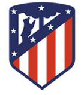
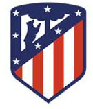
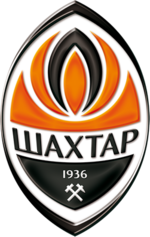
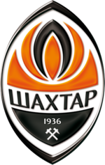

Quiz time de futebol
Ranking
Record
Quantas troféus de premier league tem o Liverpool?

Atlético de madrid já chegou em quantas finais da Champions League?


Shaktar Donetsk é sediado em qual país?


Barcelona é considerado o maior time espanhol? (verdadeiro ou falso)

Real Madrid tem quantas taças de liga dos campeões?

A Internazionale é um time de qual país?

O time fraces Olympique de Marseille conquistou quantos titulos frances?

Quantas copa da Alemanha tem Bayern de Munique?

Qual time brasileiro goleou o Borussia Dortmund pelo placar de 7x1?

O Benfica de Portugal perdeu o titulo do mundial de clubes para qual time brasileiro?

Qual nome do estádio do Porto?

Qual foi o primeiro jogador do Milan que foi considerado o melhor jogador do mundo?